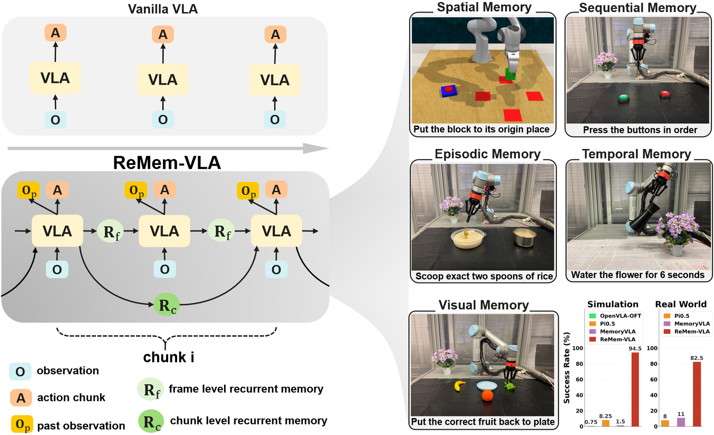
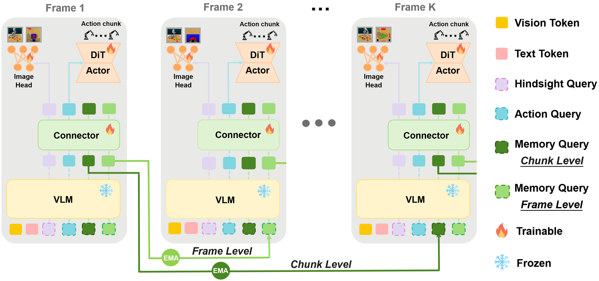
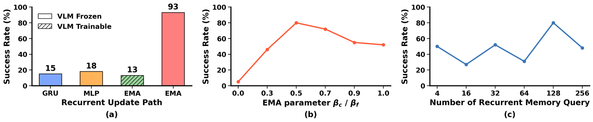
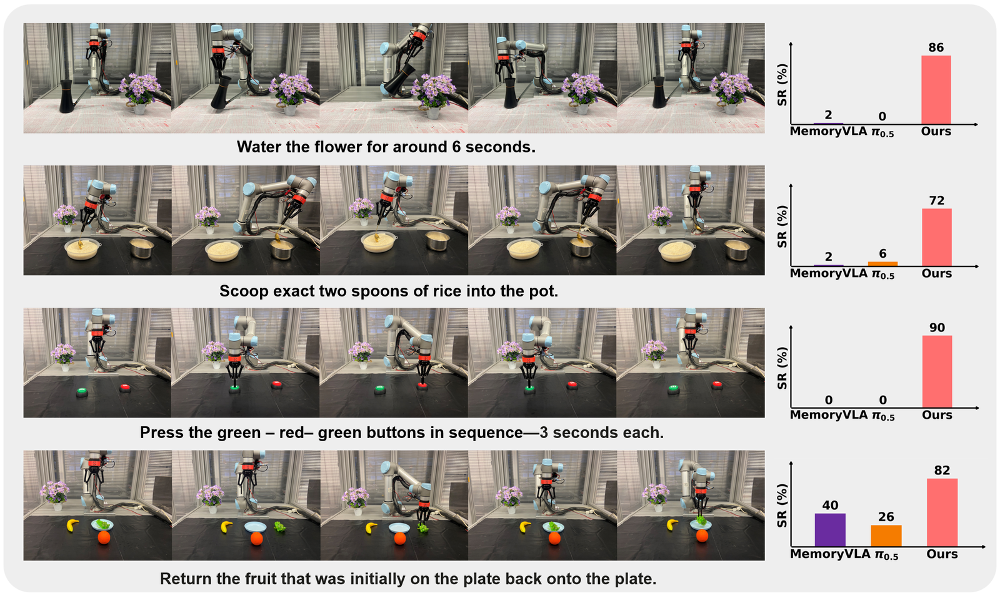

能拿到的：不建记忆库、不扩帧窗、不增加推理前向次数，就能让策略记住整段 episode；代价是记忆带宽被 query 数量硬性锁死，且「怎么写记忆」完全靠动作损失 + 像素重建间接监督。
- 最小可复用件
- EMA 递归 query 层：帧级高频更新（每帧）+ chunk 级低频更新（每 30 帧），约 30 行代码，插在冻结 VLM 与 connector 之间，可独立于本论文的动作头移植。
- 主要风险
- 固定 N=128 的信息瓶颈；梯度自由递归路径使记忆内容不可直接监督；与冻结 Qwen3-VL-2B + 12 层双向 connector + DiT 动作头强耦合，换 backbone 需重新调 \(\beta\)。
- 复现门槛
- 8×A100、总 batch 64、150k steps；仿真每任务 100 条 demo、真机每任务 200 条 demo；需自写 slot-based 流式 batch sampler，BPTT 截断长度设为 1。
1 核心摘要
问题出在马尔可夫假设上。主流 VLA（\(\pi_{0.5}\)、OpenVLA-OFT 一类）把 \(A_{t:t+k} = \pi _ \theta (o_t, \ell)\) 当作策略接口，只吃当前帧和指令；一旦任务要求「把杯子放回原处」「按顺序按三个按钮」，历史信息就无处可取。论文把已有补记忆的路线归成四类并逐一点名失效模式：检索式（MemoryVLA、MemER）依赖当前帧有强线索、干扰项多时退化；扩窗式（CronusVLA、HAMLET、PAM 的 300 帧工作记忆）窗口外的历史直接丢弃；稀疏历史式（TraceVLA、HistRISE、Bpp）丢细节且受制于外部基础模型；递归式（RoboFlamingo、AVA-VLA）虽有隐藏状态，但在 TBPTT 短窗下学不到长程依赖，且原文都没在记忆任务上评测过。
ReMem-VLA 的做法是把「记忆」变成 VLM 输入序列里的两组可学习 query。帧级 query \(Q^f \in \mathbb{R}^{N_f \times D}\) 每帧更新一次，负责几秒内的短时保持（例如维持浇水姿势六秒）；chunk 级 query \(Q^c \in \mathbb{R}^{N_c \times D}\) 只在 chunk 边界（每 k=30 帧）更新一次，负责跨 chunk 的长时上下文（例如任务做到第几步）。两者都不是学出来的递归动力学，而是「冻结 VLM 抽特征 + 固定系数 EMA 融合」这条梯度自由路径：每一步先把 query 与 VLM 隐状态、action query、hindsight query 一起过一遍，得到当帧的新表示 \(\tilde{Q}\)，再用 \(Q_t = \beta \cdot \tilde{Q}_{t-1} + (1- \beta ) \cdot Q_{t-1}\) 混进记忆。因为序列长度只增加固定的 \(N_f+N_c\) 个 token、不随时间增长，显存与单步算力在整段 episode 内恒定。
第三件东西是 Past Observation Prediction（POP）：额外加一组 hindsight query 和一个轻量 ViT patch decoder，让模型重建过去的观测 \(o_{t-m}\)，用像素 MSE 监督，权重 \(\lambda_{\mathrm{img}}=0.5\)。它只训练时用，推理时图像头不出结果——这一点很关键，它不改变在线接口。作者在四个 MemoryBench 仿真任务（含自建的 600+ 帧长时程任务）上报告平均成功率 94.5%，对比 \(\pi_{0.5}\) 的 8.25%、MemoryVLA 的 1.5%、OpenVLA-OFT 的 0.75%；真机四个任务平均 82.5%。
判定：这是专题三里最「省接口」的一条路线——没有写入触发判定、没有检索、没有外部存储，记忆就是一段跟着图跑的隐状态；它把「长期维护」做成了递归压缩，代价是压缩比不可调、遗忘曲线只能靠 \(\beta\) 调。适合当记忆表征层的基线实现，不适合当需要精确定位或跨 episode 记忆的系统主结构。

Figure 1：左侧对比单帧 VLA 与帧级、chunk 级递归记忆；右侧列出五类记忆任务及仿真、真机总体成功率。
2 记忆环节定位
主命中两格：记忆表征——记忆的载体是 128 个 D 维向量，不是帧、不是图文对、不是 key-value 条目；长期维护——维护方式是递归压缩，靠「帧级高频 + chunk 级低频」两级 EMA 把衰减常数拉开，用固定容量覆盖整段 episode。几乎不命中索引与检索：模型没有查询键、没有相似度、没有 top-k，每一步无条件读取全部记忆，这也是它能绕开「当前帧无强线索就检索不到」这一失效模式的原因。
写入触发只算部分命中：它不是事件触发，而是无条件周期写入（帧级每帧、chunk 级每 30 帧），没有「该不该记」的判定，只有「更新多快」的 \(\beta\) 与 k 两个旋钮。动作接口也算部分命中：记忆不直接输出动作，而是先在 12 层双向注意力 connector 里与 action query 混合，再送进 DiT 扩散头。评测侧有增量（自建 >600 帧长时程任务），但不是贡献主体。
| 维度 | ReMem-VLA 的具体设定 |
|---|---|
| 记忆单位 | 两组 query 向量：\(Q^f \in \mathbb{R}^{N_f \times D}\)、\(Q^c \in \mathbb{R}^{N_c \times D}\)；消融把总预算固定为 128（双层各 64）。不是 key-value 库，没有条目、没有时间戳。 |
| 写入频率 | 帧级每帧一次（密集）；chunk 级 \(t \bmod k = 0\) 时一次，k 取 1× 动作 chunk 长度 = 30 帧。episode 开始时两组 query 都重置为可学习初值。 |
| 读取条件 | 无条件读取。每步 connector 内四类 query（action / hindsight / frame / chunk）做双向自注意力，等价于「全部记忆全量参与」，没有相关性门槛。 |
| 输出 | 动作 chunk \(A_{t:t+k} \in \mathbb{R}^{30 \times 7}\)（绝对关节位置 + 二值夹爪）；训练时额外输出重建的过去帧 \(\hat{o}_{t-m}\)，推理时不使用。 |
| 交给下游 | 12 层双向 transformer connector → DiT 动作头（DDPM 训练，推理 DDIM 20 步）。记忆只以 token 形式进入 connector，不改变动作头的结构。 |
| 在线性 | 因果：只用 \(\le\) t 的观测，不用未来帧、不用 oracle 状态、不用任务阶段标注。容量上限 = N_f+N_c；遗忘策略 = EMA 指数衰减 + episode 边界硬重置；跨 episode 无任何记忆。 |
三个必须回答的问题，直接给结论：（1）query 数量固定吗？固定，而且这是它显存恒定的全部原因——序列长度只增加常数项 \(N_f+N_c\)，不随帧数增长；作者扫了 \(N \in {4, 16, 32, 64, 128, 256, 512}\)，128 最好（Fig. 6(c)）。（2）跨 chunk 传递会衰减吗？会。旧记忆每次更新乘 \((1- \beta )\)，帧级更新 n 次剩 \((1- \beta _f)^n\)，chunk 级更新 n/k 次剩 \((1- \beta _c)^{n/k}\)；在 \(\beta=0.5\)、k=30 下，过 30 帧后帧级记忆里旧内容的权重约 \(0.5^30 \approx 1e-9\)，chunk 级还有 0.5——两者差约 2^29 倍，这是「长时记忆」真正的机制来源（本页按式 5、式 6 推算，论文只给了指数形式）。（3）推理要额外前向吗？不要。记忆 query 是输入序列的一部分，随同一次 backbone 前向处理；多出来的只有 connector 里那 128 个 token 的注意力开销，是常数。
3 问题与动机
论文的失败模式叙事很具体，值得照抄进自己的动机段。第一个是「回不去原处」：机器人把杯子放到中间、按一下按钮、然后要求放回原位——此时当前帧里根本没有「原位」的信息，马尔可夫策略只能瞎猜。第二个是「数不清」：舀两勺米然后停，策略必须知道自己已经舀了几勺，而每帧观测在舀完之后几乎一样。第三个是「维持不住」：浇花需要保持姿势约六秒，期间没有显著视觉反馈，纯反应式策略会中途松手。第四个是「顺序错」：按绿-红-绿顺序各按三秒，需要同时维护顺序与计时。
针对这些，论文对四类既有路线给出了各自的死法，并且明确点了两个「同门」的短板：AVA-VLA 用截断窗口 T=4 的 TBPTT 训练，梯度过不了窗口边界，动作损失没法教会模型「几百步前的东西要留」。这个观察直接催生了本文最反直觉的设计——把递归路径做成梯度自由的：冻结 VLM、固定 EMA 系数，让「怎么传播」变成确定性前向，「记什么」才交给学习。作者在消融里验证了这个判断：换成可训练 VLM、GRU 或 MLP 做递归路径，Put Block Back 的成功率从 93% 掉到 13% / 15% / 18%（Fig. 6(a)）。
| 路线 | 论文点名的代表 | 论文给出的失效模式 |
|---|---|---|
| 扩窗 / 固定视野 | CronusVLA、HAMLET（8 步窗）、PTP、PAM（最长 300 帧） | 窗口长度固定，窗口外的历史直接丢弃；任务超过窗口就没有记忆 |
| 稀疏历史表示 | TraceVLA（点轨迹叠加）、HistRISE（点跟踪）、Bpp（VLM 选关键帧） | 能覆盖整段历史但丢细节，且强依赖外部基础模型的稳定性 |
| 记忆库检索 | MemoryVLA、MemER | 检索质量取决于当前帧有没有强线索；相似干扰项一多就取错 |
| 朴素递归 | RoboFlamingo（LSTM 头）、AVA-VLA（递归 belief） | TBPTT 短窗截断使长程信用分配失效；两篇都没在记忆任务上评测 |
本页补充一点论文没展开的判断：前三条路线的共同问题是「记忆内容与读取方式分离」——先决定存什么，再决定取什么，两次决策都可能出错；ReMem 把两步合成一步，代价是放弃了选择性。这在短 episode（数百帧）里划算，在需要精确空间查询的场景里则是净损失。
4 方法拆解
4.1 输入、时间表征与四类 query
骨干是冻结的 Qwen3-VL-2B（2B 参数），沿用 VLA-Adapter 的「可学习 query 当接口」思路，不做大规模机器人数据预训练。输入是第三视角 + 腕部视角两路 RGB，各 256×256，加语言指令；动作空间是绝对关节位置 + 二值夹爪，动作 chunk 长度 k=30，输出维度 7。backbone 产出隐状态 \(H_t \in \mathbb{R}^{L \times D}\)（L 为序列长度，D 为隐藏维度；论文未给出 D 的具体数值，未在已核验的公开材料中确认），内部保持因果注意力。
四类 query 全部追加在输入序列里，共享同一个 D：action query \(Q^{\mathrm{action}} \in \mathbb{R}^{N_a \times D}\) 负责抽取动作相关语义；hindsight query \(Q^{\mathrm{img}} \in \mathbb{R}^{N_{\mathrm{img}} \times D}\) 负责抽取「过去画面」相关特征；帧级记忆 query \(Q^f \in \mathbb{R}^{N_f \times D}\) 与 chunk 级记忆 query \(Q^c \in \mathbb{R}^{N_c \times D}\) 负责累积。论文没有分别给出 N_a、N_img 的取值，未在已核验的公开材料中确认。
时间表征的关键选择是「不加长序列」：没有任何历史帧被拼进输入，历史只活在 \(Q^f\)、\(Q^c\) 两组 token 里。这使得单步计算量对 t 完全不敏感——第 1 帧和第 900 帧的输入长度一样。
4.2 双层递归：EMA 更新与衰减常数
每一步，两组记忆 query 先 attend 到 VLM 隐状态以及 action / hindsight query，抽取当帧信息，得到 \(\tilde{Q}^f_t\)、\(\tilde{Q}^c_t\)；然后按下式写回（原文式 5、式 6）：
\(Q^f_t = \beta _f \cdot \tilde{Q}^f_{t-1} + (1- \beta _f) \cdot Q^f_{t-1}\)（每帧）
\(Q^c_t = \beta_c\tilde{Q}^c_{t-k}+(1-\beta_c)Q^c_{t-k}\)（当 \(t\bmod k=0\)）
\(Q^c_t=Q^c_{t-1}\)（其余时刻）
注意权重方向：\(\beta\) 乘在新写入上，\((1- \beta )\) 乘在旧记忆上，所以 \(\beta\) 越大越「健忘于过去、激进覆盖」。论文在长时程任务上扫 \(\beta_{\mathrm{f}} = \beta_{\mathrm{c}} \in {0, 0.3, 0.5, 0.7, 0.9, 1}\)，0.5 最好（Fig. 6(b)）：\(\beta\) 太大记忆被迅速覆盖，\(\beta\) 太小记忆太惰、吸不进新信息。chunk 级更新间隔另扫了 {0.5, 1, 2, 3}× 动作 chunk 长度（即 15/30/60/90 帧），1× 即 30 帧最优。
三个工程含义要分清。第一，容量是常数不是上限：记忆状态大小恒为 \((N_f+N_c) \times D\)，与 episode 长度无关，所以显存恒定（论文未给显存数字，本页由结构推出）。第二，衰减是可算的：n 帧后旧内容残余 \((1- \beta _f)^n\)，chunk 级为 \((1- \beta _c)^{n/k}\)，k=30 时等效半衰期被拉长 30 倍。第三，\(\beta\) 被固定、不参与学习：这是刻意的，因为 BPTT 截断长度只有 1（论文实现细节原文：BPTT truncation horizon to 1），梯度根本传不到几十步前，任何可学习的递归系数都学不出长程行为——消融里 GRU/MLP 版本掉到 15%/18% 就是证据。
4.3 Connector 与两条输出支路
因为 backbone 是因果注意力，action query 在 backbone 内部看不到「序列后面」的记忆 query，所以作者在 VLM 与预测头之间插了一个 12 层双向注意力 transformer connector（沿用 metaquery 的结构）。四类 query 在这里做全互相注意力，记忆由此混进动作表征与图像表征。
动作支路：DiT 扩散头以 action query 为条件做 cross-attention，预测 \(A_{t:t+k} \in \mathbb{R}^{k \times 7}\)，DDPM 噪声预测损失 \(L_{\mathrm{action}} = E \Vert \varepsilon - \varepsilon _ \theta (A_ \tau , \tau , Q^{\mathrm{action}}) \Vert ^{2}\)，推理用 DDIM 20 步。图像支路：轻量 ViT 风格 patch decoder 以 hindsight query 为条件重建过去帧，\(L_{\mathrm{image}} = \Vert o_{t-m} - \hat{o}_{t-m} \Vert ^{2}\)（像素 MSE，不是对比学习、不是特征蒸馏）。总损失 \(L_{\mathrm{total}} = L_{\mathrm{action}} + 0.5 \cdot L_{\mathrm{image}}\)。
POP 的监督信号需要说清楚：目标是重建一张过去 RGB 图，按原文措辞在真机实验中「设成预测 episode 的第一帧」时收益最大（Return Fruit 34% → 82%，Fig. 5(b)），也就是 \(o_{t-m}\) 中的 m 随 t 变化使目标恒为首帧。这意味着它训练的是「把初始场景刻进 hindsight query」，而不是「记住上一帧」。副作用是：视觉记忆被压缩成一张图的像素级重建目标，对光照、遮挡、相机位姿变化都敏感，论文没有报告这方面的鲁棒性。
4.4 训练与推理的差异
训练侧最容易被忽略但最难抄的是 slot-based streaming batching：维护 B 个并发 slot，每个 slot 绑定一条正在播的 episode，每步从每个 slot 取一帧组成 batch（无 padding、无截断），slot 内的递归状态跨整条 episode 累积，遇到 episode 边界硬重置。这样既保持时间顺序，又不跨 episode 串味。超参：8×A100、总 batch 64、cosine 学习率 5e-5 → 1e-7、150k steps、\(\lambda_{\mathrm{img}}=0.5\)、BPTT 截断 1。
推理侧：两组 query 持续维护，帧级每步刷新、chunk 级按频率刷新，仅在新 episode 开始时重置。不需要任何额外前向——不检索、不重跑 backbone、不做 test-time 优化；单张 RTX 4090 上 10 Hz，若复用上一个动作 chunk 做中间控制，可到接近 20 Hz。这两组数字是同机同模型的端到端频率，不能直接搬到 Jetson 或更低算力平台。

Figure 2：冻结的 VLM 输出两组记忆 query，经 EMA 分别按帧和 chunk 更新；图像头与 DiT 动作头从共享表示读取条件。
5 证据与实验
仿真用 MemoryBench（即 SAM2Act 的记忆基准）的三个任务——Put Block Back、Rearrange Block、Reopen Drawer，每个约 300 帧；作者另加一个把 Rearrange Block 与 Put Block Back 串起来的 Long Horizon Task，超过 600 帧。每任务 100 条示教、四任务联合训练 150k steps、每任务 100 次 rollout 取成功率。三个基线（OpenVLA-OFT、\(\pi_{0.5}\)、MemoryVLA）由作者在同一数据与评测协议下复现。
| 方法（Table 1） | Put Block Back | Rearrange Block | Reopen Drawer | Long Horizon | 平均 |
|---|---|---|---|---|---|
| OpenVLA-OFT | 0 | 0 | 3 | 0 | 0.75 |
| \(\pi_{0.5}\) | 6 | 4 | 20 | 3 | 8.25 |
| MemoryVLA | 0 | 1 | 5 | 0 | 1.5 |
| ReMem-VLA | 93 | 99 | 100 | 86 | 94.5 |
层级消融（Table 2）把记忆 query 的总预算固定为 128，避免「query 多所以更好」的混淆：完全去掉递归 query 只剩 17.75%（说明 backbone + 动作头本身几乎没有记忆能力）；只留帧级 87.75%，只留 chunk 级 84.5%，双层 94.5%。差别集中体现在 Long Horizon：帧级 70%、chunk 级 71%、双层 86%，这与「chunk 级负责长程」的设计意图一致，但幅度只有 15 个百分点，不是碾压式差距。
| 消融（Table 2） | Put Block Back | Rearrange Block | Reopen Drawer | Long Horizon | 平均 |
|---|---|---|---|---|---|
| No Recurrent Query | 7 | 32 | 27 | 5 | 17.75 |
| Frame Level only | 90 | 95 | 96 | 70 | 87.75 |
| Chunk Level only | 81 | 92 | 94 | 71 | 84.5 |
| Dual Level | 93 | 99 | 100 | 86 | 94.5 |

Figure 6：(a) 比较 EMA、GRU、MLP 更新路径；(b) 扫描记忆更新系数；(c) 扫描记忆 query 数量，图内峰值分别位于 0.5 和 128。
真机：UR5 + Robotiq 夹爪，RealSense D435 双目（腕部 + 第三视角），每任务 200 条 SpaceMouse 遥操作示教，每任务 50 次试验。四个任务分别探时间记忆（浇花维持约 6 秒，86%）、情景记忆（舀两勺米，72%）、顺序 + 计时（绿-红-绿各 3 秒，90%）、视觉记忆（水果放回盘子，82%），平均 82.5%。论文正文写「far outperforming MemoryVLA and \(\pi_{0.5}\) (8% and 11%)」，但同一篇的 Fig. 4 柱状图逐任务是 MemoryVLA 2/2/0/40、\(\pi_{0.5}\) 0/6/0/26，均值分别是 11% 与 8%——两个数字被对调了，此处存在内部不一致，引用时建议只写「两个基线均值均低于 12%」。

Figure 4：四个真机任务逐项比较 ReMem-VLA、MemoryVLA 与 \(\pi_{0.5}\) 的成功率；柱顶数值显示 ReMem-VLA 分别为 86%、72%、90%、82%。
POP 消融在真机做：视觉记忆密集的 Return Fruit 从 34% 提到 82%，其余任务收益有限（Fig. 5(b)）；论文没有给 POP 在仿真上的数字。真机 50 次试验的统计噪声不可忽略：\(p\approx0.8\) 时 95% 置信区间约 ±11 个百分点（本页按二项分布推算），所以单任务上 10 个百分点量级的差异不能当成确定结论。
不能横向比较的地方。（1）基线全部由作者复现，不是各论文原报告值，不能拿去和 MemoryVLA 原文数字对比；（2）作者改了基准设置——按钮位置随机化降到 70%、Rearrange Block 强制一致轨迹——与原 MemoryBench 结果不同协议；（3）ReMem 只用 100 条示教/任务、不做大规模预训练，而 \(\pi_{0.5}\)、OpenVLA-OFT 是带大规模预训练的通用模型，参数与数据量不对等，因此「超过 \(\pi_{0.5}\)」更应读作「在本任务、本数据量下超过」；（4）MemoryVLA 在仿真里 0/1/5/0 的成绩反常地低于「有记忆库」的预期，是否复现充分未在已核验的公开材料中确认；（5）正文声称推理细节与 chunk 间隔实验「见附录」，但 arXiv v1 的 20 页里没有附录，相关数字无法核对。
还有一处说法要收着写：摘要与结论称「surpasses MemoryVLA on memory-dependent tasks by a large margin」，在仿真表里这个 margin 是 94.5 vs 1.5，在真机是 82.5 vs \(\approx11\)；但这两个对比都建立在上面的复现与协议改动之上，不能延伸到「比检索式记忆范式更好」这种一般性结论——本文没有做「同一记忆预算下递归 vs 检索」的控制实验。
6 优点、局限与 VLA 适配
可迁移
EMA 递归 query 层本身与 backbone 无关，只要能拿到 hidden states 就能插；「帧级高频 + chunk 级低频」的双时间尺度技巧、slot-based 流式训练器、POP 作为辅助损失，三者都可以单独拿走。尤其是 chunk 级低频更新：用 30 行代码就能把任意 VLA 的记忆衰减常数拉开一个量级。
不成立的前提
「冻结 backbone 且梯度自由递归」适用于小数据微调，但如果你的 VLM 需要联合适配机器人数据，这条路径会锁死表征；「128 个 query 够用」只在数百帧任务上被验证；「10 Hz 够用」绑定 RTX 4090；「隐状态能替代空间记忆」在毫米级定位任务上没有证据。
最小改造方案。在已有的 VLA-Adapter 式结构上（冻结 VLM + 可学习 action query + 动作头），加 64 个帧级、64 个 chunk 级 query，\(\beta_{\mathrm{f}}=\beta_{\mathrm{c}}=0.5\)，chunk 间隔取动作 chunk 长度，把四类 query 一起送进 connector；训练时 BPTT 截断设 1，配一个 slot 流式 sampler；如需视觉记忆再加 POP（预测首帧，\(\lambda=0.5\)）。改动量集中在一个新模块 + 一个 batch sampler，不动动作头。
延迟与显存。结构上单步成本恒定：输入只多 \(N_f+N_c+N_a+N_{\mathrm{img}}\) 个 token，记忆状态大小固定，不随帧数增长。但绝对延迟不低——2B VLM 前向 + 12 层 connector + 20 步 DDIM，论文报 10 Hz（复用 chunk 可到 20 Hz）。如果你的控制回路要 30 Hz 以上，需要缩小 chunk 推理频率或换更小 backbone，而这两件事都会改变记忆更新的时间尺度（\(\beta\) 与 k 需重调）。
真机闭环风险。递归状态没有回滚机制：一旦被遮挡、碰撞或人工干预污染，只能等 EMA 自然衰减（帧级在 \(\beta=0.5\) 下几十帧就清零，chunk 级则要几百帧），中间没有任何「这条记忆错了」的信号。反过来，chunk 级记忆因为衰减慢，错误残留时间也长。episode 边界硬重置意味着跨 episode 完全没有记忆，这在「同一场景连续做多个任务」的部署里是硬限制。
与检索式路线的互补性。两者失效方向相反：ReMem 全量读取、不挑内容，容量固定；MemoryVLA 一类按需检索、容量可扩，但依赖线索。真要上生产，合理组合是「递归 query 保底 + 外部库做精确回溯」，而本文没有做这种组合实验，这条只能算本页建议。
7 落地清单
- 先立无记忆基线。同 backbone、同动作头、同数据，跑通不做任何记忆的版本，在 Put Block Back 上应落在论文 No Recurrent Query 的 7% 量级附近。基线不对，后面的增益无法归因。
- 实现递归层并对齐超参。N_f=64、N_c=64、\(\beta_{\mathrm{f}}=\beta_{\mathrm{c}}=0.5\)、k=30 帧；在 connector 之前把四类 query 拼接；每步打印序列长度与 peak memory，验收标准是这两项在 t=1 与 t=900 时完全一致。
- 写 slot 流式 sampler。B=64 个 slot 各绑一条 episode，每步每 slot 取一帧，episode 结束硬重置状态；BPTT 截断设 1，cosine 5e-5→1e-7，150k steps。若沿用常规 chunk 切分，递归状态会被切断，效果会回到 17% 量级。
- 加 POP 并验证方向。目标设为 episode 首帧，\(\lambda_{\mathrm{img}}=0.5\)，用像素 MSE；在视觉记忆任务（水果归位一类）上应看到从「无 POP 的 30% 出头」跳到 80% 量级，若方向不对说明 hindsight query 没接到图像头。
- 按消融做验收。Long Horizon（>600 帧）成功率目标 \(\ge70\%\)（论文 86%）；同时跑 frame-level only，必须明显低于双层（论文 70% vs 86%）。若两者差小于 10 个百分点，说明 chunk 级更新没真正生效，先查 \(t\bmod k\) 的计数是否按推理步而非训练 step。
- 部署前测延迟。在目标硬件上实测端到端频率，并与「复用动作 chunk」的频率一起记录；若低于 10 Hz，优先降 DDIM 步数（20 → 10）而不是降 k，因为改 k 会改变记忆的衰减常数。
来源：Hang Li, Fengyi Shen, Dong Chen, Liudi Yang, Xudong Wang, Jinkui Shi, Zhenshan Bing, Ziyuan Liu, Alois Knoll, "ReMem-VLA: Empowering Vision-Language-Action Model with Memory via Dual-Level Recurrent Queries", arXiv:2603.12942v1 [cs.RO], 2026-03-13。数字取自 Table 1（仿真主表）、Table 2（递归层级消融）、第 4.3 节正文与 Fig. 4（真机逐任务成功率）、Fig. 5(b)（POP 消融）、Fig. 6（递归路径 / \(\beta\) / query 数量）。官方代码未在已核验的公开材料中确认，故未给出代码链接。
相关页面：MemoryVLA+（记忆库路线对照） · NativeMem · 返回专题三